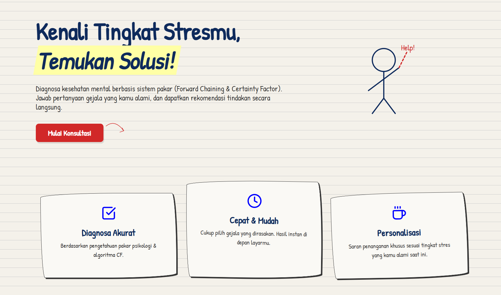

Filter:
Showing 12 projects
AI / Machine Learning
End-to-end ML pipelines, NLP, dan Computer Vision
Classification
Customer Churn Prediction System
End-to-end ML pipeline prediksi churn pelanggan telekomunikasi dengan akurasi 94.2%. Mencakup EDA, feature engineering, model comparison (XGBoost, Random Forest, Logistic Regression), dan deployment sebagai REST API.
Python
XGBoost
Scikit-Learn
Flask API
Pandas
NLP

Expert SystemData Science & Analytics
EDA, statistical analysis, visualisasi, dan business intelligence
Forecasting
EDA
Web Development
Full-stack applications, REST API, dan sistem informasi
Full-Stack
Web App
Cybersecurity
Network security, IDS, dan vulnerability assessment
IDS / ML